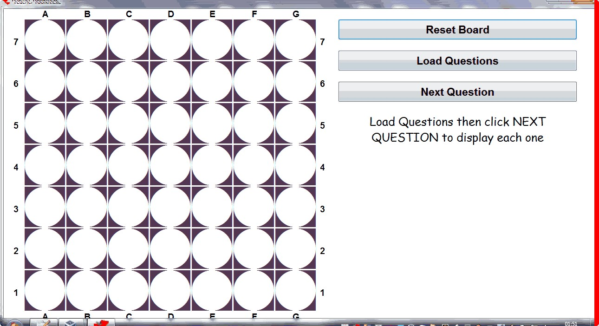

Connect 4
When you select Connect 4, you are greeted with this window:

LOAD QUESTIONS
Click here to find out how to create a bank of questions and load them into the game.
To play:
When you have a bank of questions loaded, click on the question button to see a question. The button then changes to the answer button.
Click on the coordinates chosen by the team who answers correctly.
For a variation of the game - you can allow teams to steal coordinates back. Clicking on a coloured position changes the colour to the opposite team's colour.